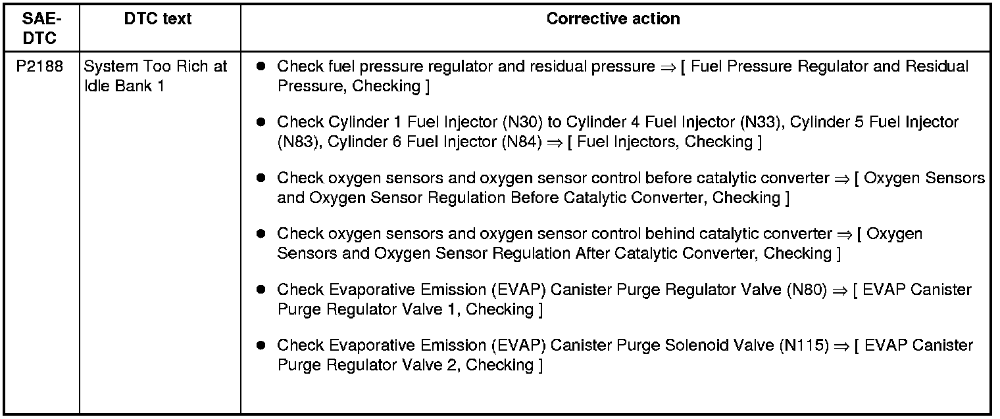

LEMON Manuals
: Even more car manuals for everyone: 1960-2025
Home
>>
Volkswagen
>>
2004
>>
Touareg (7LA) V6-3.2L (BAA)
>>
Repair and Diagnosis
>>
A L L Diagnostic Trouble Codes ( DTC )
>>
Testing and Inspection
>>
P Code Charts
>>
P2188
P2188
P2188
P2188:
